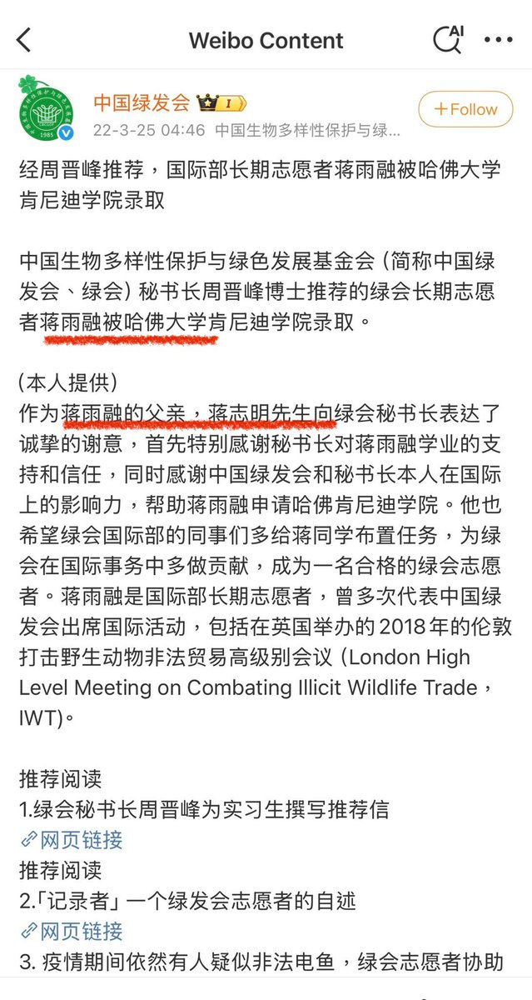
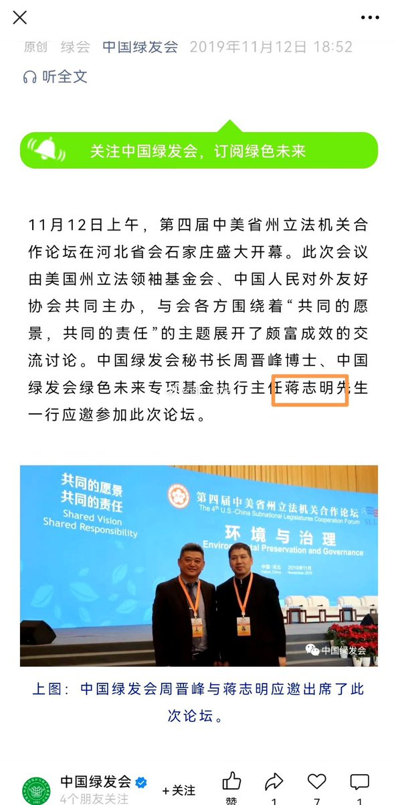

由此观之，特朗普演讲根本没人看了，否则最荒诞，最让人恶心这个头衔谁能抢的过它
至少，蒋的演讲本身毫无问题，目前也没有证据证明蒋本人有任何与其演讲内容相违背的地方，你所有的指控都是说人家“没有讲什么”，而本身就是一个根据演讲者自由发挥且时间有限的演讲，说人家有什么没讲的，实属大可不必

至少，蒋的演讲本身毫无问题，目前也没有证据证明蒋本人有任何与其演讲内容相违背的地方，你所有的指控都是说人家“没有讲什么”，而本身就是一个根据演讲者自由发挥且时间有限的演讲，说人家有什么没讲的，实属大可不必


这是我今年看过最荒诞，且让人恶心的演讲
蒋雨融在演讲中，说她相信世界可以消灭贫穷和饥饿，义愤填膺的为女性共情，为战争的受害者共情
但是她本身不就是加害行为的受益者吗？
蒋雨融是受绿发会推荐，就读的哈佛，其父亲还是绿发会执行主任，这推荐什么成色，大家心里都清楚 https://t.co/UGHTAwR793 https://t.co/tEWWPX3JWY
蒋雨融在演讲中，说她相信世界可以消灭贫穷和饥饿，义愤填膺的为女性共情，为战争的受害者共情
但是她本身不就是加害行为的受益者吗？
蒋雨融是受绿发会推荐，就读的哈佛，其父亲还是绿发会执行主任，这推荐什么成色，大家心里都清楚 https://t.co/UGHTAwR793 https://t.co/tEWWPX3JWY